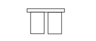

O010B ENGINE FAN ADJUSTMENT RESISTANCE - 1 (RADIATOR)
- Path
- Electrical equipment > 3 CONNECTORS > O RESISTANCES AND DIMMERS > O010 ENGINE FAN ADJUSTMENT RESISTANCE - 1 > O010B ENGINE FAN ADJUSTMENT RESISTANCE - 1 (RADIATOR)
- Kind
- connector pinout (pin -> wire colour -> other end)
- Applies to
- engines: 1.3 JTD 16v; all production periods; only with equipment: Air Conditioner
- Interactive page
- https://sloeber94.github.io/elrnDB-fPnd/en/#/169003553
Applies to: engines: 1.3 JTD 16v; all production periods; only with equipment: Air Conditioner

Wiring | Colour |
|---|---|
- |
Pin | Cable | Destination | |||
|---|---|---|---|---|---|
Sec.. | Colour | Node | Connect. | Pin | |
1 | H | 4 | X | 1 | |
A | |||||